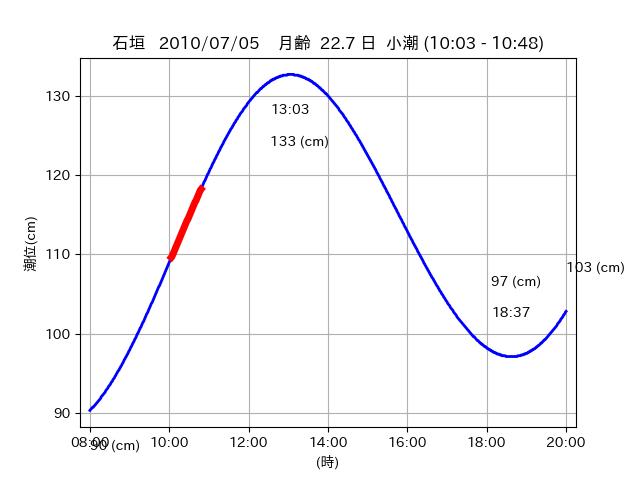
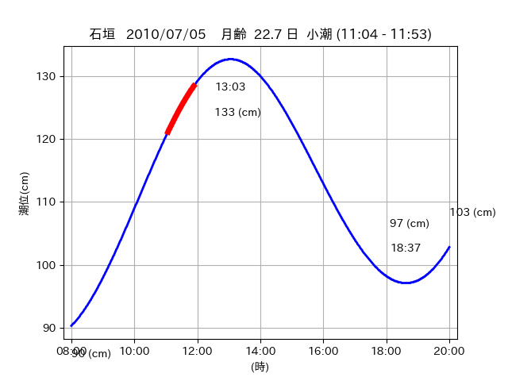
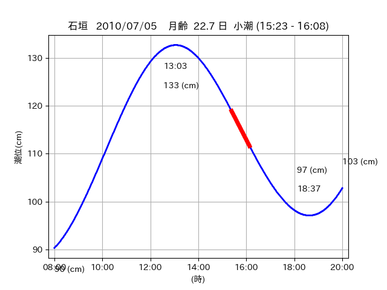

<!DOCTYPE html>
<html>
<head>
    
    <meta http-equiv="content-type" content="text/html; charset=UTF-8" />
    
        <script>
            L_NO_TOUCH = false;
            L_DISABLE_3D = false;
        </script>
    
    <style>html, body {width: 100%;height: 100%;margin: 0;padding: 0;}</style>
    <style>#map {position:absolute;top:0;bottom:0;right:0;left:0;}</style>
    <script src="https://cdn.jsdelivr.net/npm/leaflet@1.9.3/dist/leaflet.js"></script>
    <script src="https://code.jquery.com/jquery-3.7.1.min.js"></script>
    <script src="https://cdn.jsdelivr.net/npm/bootstrap@5.2.2/dist/js/bootstrap.bundle.min.js"></script>
    <script src="https://cdnjs.cloudflare.com/ajax/libs/Leaflet.awesome-markers/2.0.2/leaflet.awesome-markers.js"></script>
    <link rel="stylesheet" href="https://cdn.jsdelivr.net/npm/leaflet@1.9.3/dist/leaflet.css"/>
    <link rel="stylesheet" href="https://cdn.jsdelivr.net/npm/bootstrap@5.2.2/dist/css/bootstrap.min.css"/>
    <link rel="stylesheet" href="https://netdna.bootstrapcdn.com/bootstrap/3.0.0/css/bootstrap-glyphicons.css"/>
    <link rel="stylesheet" href="https://cdn.jsdelivr.net/npm/@fortawesome/fontawesome-free@6.2.0/css/all.min.css"/>
    <link rel="stylesheet" href="https://cdnjs.cloudflare.com/ajax/libs/Leaflet.awesome-markers/2.0.2/leaflet.awesome-markers.css"/>
    <link rel="stylesheet" href="https://cdn.jsdelivr.net/gh/python-visualization/folium/folium/templates/leaflet.awesome.rotate.min.css"/>
    
            <meta name="viewport" content="width=device-width,
                initial-scale=1.0, maximum-scale=1.0, user-scalable=no" />
            <style>
                #map_a799bc93b770df355c600b6e39b79b24 {
                    position: relative;
                    width: 2048.0px;
                    height: 1600.0px;
                    left: 0.0%;
                    top: 0.0%;
                }
                .leaflet-container { font-size: 1rem; }
            </style>
        
</head>
<body>
    
    
            <div class="folium-map" id="map_a799bc93b770df355c600b6e39b79b24" ></div>
        
</body>
<script>
    
    
            var map_a799bc93b770df355c600b6e39b79b24 = L.map(
                "map_a799bc93b770df355c600b6e39b79b24",
                {
                    center: [24.563, 124.344],
                    crs: L.CRS.EPSG3857,
                    ...{
  "zoom": 12,
  "zoomControl": true,
  "preferCanvas": false,
}

                }
            );

            

        
    
            var tile_layer_e12c160f6102bd4343f9ff597e333b1e = L.tileLayer(
                "https://cyberjapandata.gsi.go.jp/xyz/seamlessphoto/{z}/{x}/{y}.jpg",
                {
  "minZoom": 0,
  "maxZoom": 18,
  "maxNativeZoom": 18,
  "noWrap": false,
  "attribution": "\u5730\u7406\u9662\u5730\u56f3",
  "subdomains": "abc",
  "detectRetina": false,
  "tms": false,
  "opacity": 1,
}

            );
        
    
            tile_layer_e12c160f6102bd4343f9ff597e333b1e.addTo(map_a799bc93b770df355c600b6e39b79b24);
        
    
            var marker_0ff95dc35a5cbc859bf5a271d50f8cea = L.marker(
                [24.5592, 124.3367],
                {
}
            ).addTo(map_a799bc93b770df355c600b6e39b79b24);
        
    
            var icon_afab030afaa0aa67237347d8080b93d7 = L.AwesomeMarkers.icon(
                {
  "markerColor": "orange",
  "iconColor": "white",
  "icon": "info-sign",
  "prefix": "glyphicon",
  "extraClasses": "fa-rotate-0",
}
            );
        
    
        var popup_c10829f09a8698d5977ef4d2d86c0404 = L.popup({
  "maxWidth": "100%",
});

        
            
                var html_50a1674dacd778928e65e0cece2d6a2e = $(`<div id="html_50a1674dacd778928e65e0cece2d6a2e" style="width: 100.0%; height: 100.0%;"><table><tr><td></td></tr><tr><td><center>20100705 No.1 </center></table></td></tr></table</div>`)[0];
                popup_c10829f09a8698d5977ef4d2d86c0404.setContent(html_50a1674dacd778928e65e0cece2d6a2e);
            
        

        marker_0ff95dc35a5cbc859bf5a271d50f8cea.bindPopup(popup_c10829f09a8698d5977ef4d2d86c0404)
        ;

        
    
    
                marker_0ff95dc35a5cbc859bf5a271d50f8cea.setIcon(icon_afab030afaa0aa67237347d8080b93d7);
            
    
            var poly_line_4da49f9e1a669a8f5ba15061e39385f4 = L.polyline(
                [[24.5592, 124.3367], [24.5622, 124.3423]],
                {"bubblingMouseEvents": true, "color": "#FF00FF", "dashArray": null, "dashOffset": null, "fill": false, "fillColor": "#FF00FF", "fillOpacity": 0.2, "fillRule": "evenodd", "lineCap": "round", "lineJoin": "round", "noClip": false, "opacity": 1.0, "smoothFactor": 1.0, "stroke": true, "weight": 3}
            ).addTo(map_a799bc93b770df355c600b6e39b79b24);
        
    
            var marker_71939f61017b4c033447915834d21705 = L.marker(
                [24.5633, 124.344],
                {
}
            ).addTo(map_a799bc93b770df355c600b6e39b79b24);
        
    
            var icon_5e047c9bcc251a176830a06b232deb16 = L.AwesomeMarkers.icon(
                {
  "markerColor": "orange",
  "iconColor": "white",
  "icon": "info-sign",
  "prefix": "glyphicon",
  "extraClasses": "fa-rotate-0",
}
            );
        
    
        var popup_66e24593c423454b39ce0acb0a4511f1 = L.popup({
  "maxWidth": "100%",
});

        
            
                var html_b134dbb1704f5b9fa6d752a52e6425aa = $(`<div id="html_b134dbb1704f5b9fa6d752a52e6425aa" style="width: 100.0%; height: 100.0%;"><table><tr><td></td></tr><tr><td><center>20100705 No.2 </center></table></td></tr></table</div>`)[0];
                popup_66e24593c423454b39ce0acb0a4511f1.setContent(html_b134dbb1704f5b9fa6d752a52e6425aa);
            
        

        marker_71939f61017b4c033447915834d21705.bindPopup(popup_66e24593c423454b39ce0acb0a4511f1)
        ;

        
    
    
                marker_71939f61017b4c033447915834d21705.setIcon(icon_5e047c9bcc251a176830a06b232deb16);
            
    
            var poly_line_cf32707ee261a1f2bd640ec582da7f51 = L.polyline(
                [[24.5633, 124.344], [24.5695, 124.3486]],
                {"bubblingMouseEvents": true, "color": "#FF00FF", "dashArray": null, "dashOffset": null, "fill": false, "fillColor": "#FF00FF", "fillOpacity": 0.2, "fillRule": "evenodd", "lineCap": "round", "lineJoin": "round", "noClip": false, "opacity": 1.0, "smoothFactor": 1.0, "stroke": true, "weight": 3}
            ).addTo(map_a799bc93b770df355c600b6e39b79b24);
        
    
            var marker_e2406127f8b7681e304e3b86551049ed = L.marker(
                [24.5667, 124.3471],
                {
}
            ).addTo(map_a799bc93b770df355c600b6e39b79b24);
        
    
            var icon_a33acf2b5e18392b9b83394087f879da = L.AwesomeMarkers.icon(
                {
  "markerColor": "orange",
  "iconColor": "white",
  "icon": "info-sign",
  "prefix": "glyphicon",
  "extraClasses": "fa-rotate-0",
}
            );
        
    
        var popup_ebca160436940b5e1e1b19183309eb85 = L.popup({
  "maxWidth": "100%",
});

        
            
                var html_87133070d665c6dfe56b2c7c50e74486 = $(`<div id="html_87133070d665c6dfe56b2c7c50e74486" style="width: 100.0%; height: 100.0%;"><table><tr><td></td></tr><tr><td><center>20100705 No.3 </center></table></td></tr></table</div>`)[0];
                popup_ebca160436940b5e1e1b19183309eb85.setContent(html_87133070d665c6dfe56b2c7c50e74486);
            
        

        marker_e2406127f8b7681e304e3b86551049ed.bindPopup(popup_ebca160436940b5e1e1b19183309eb85)
        ;

        
    
    
                marker_e2406127f8b7681e304e3b86551049ed.setIcon(icon_a33acf2b5e18392b9b83394087f879da);
            
    
            var poly_line_d0b00dc8095410e9374b0b27beed3152 = L.polyline(
                [[24.5667, 124.3471], [24.5601, 124.3405]],
                {"bubblingMouseEvents": true, "color": "#00FFFF", "dashArray": null, "dashOffset": null, "fill": false, "fillColor": "#00FFFF", "fillOpacity": 0.2, "fillRule": "evenodd", "lineCap": "round", "lineJoin": "round", "noClip": false, "opacity": 1.0, "smoothFactor": 1.0, "stroke": true, "weight": 3}
            ).addTo(map_a799bc93b770df355c600b6e39b79b24);
        
</script>
</html>